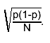
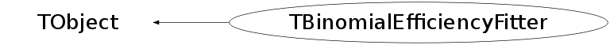

class TBinomialEfficiencyFitter: public TObject
TBinomialEfficiencyFitter Binomial fitter for the division of two histograms. Use when you need to calculate a selection's efficiency from two histograms, one containing all entries, and one containing the subset of these entries that pass the selection, and when you have a parametrization available for the efficiency as a function of the variable(s) under consideration. A very common problem when estimating efficiencies is that of error estimation: when no other information is available than the total number of events N and the selected number n, the best estimate for the selection efficiency p is n/N. Standard binomial statistics dictates that the uncertainty (this presupposes sufficiently high statistics that an approximation by a normal distribution is reasonable) on p, given N, is  However, when p is estimated as n/N, fluctuations from the true p to its estimate become important, especially for low numbers of events, and giving rise to biased results. When fitting a parametrized efficiency, these problems can largely be overcome, as a hypothesized true efficiency is available by construction. Even so, simply using the corresponding uncertainty still presupposes that Gaussian errors yields a reasonable approximation. When using, instead of binned efficiency histograms, the original numerator and denominator histograms, a binned maximum likelihood can be constructed as the product of bin-by-bin binomial probabilities to select n out of N events. Assuming that a correct parametrization of the efficiency is provided, this construction in general yields less biased results (and is much less sensitive to binning details). A generic use of this method is given below (note that the method works for 2D and 3D histograms as well): { TH1* denominator; // denominator histogram TH1* numerator; // corresponding numerator histogram TF1* eff; // efficiency parametrization .... // set step sizes and initial parameter .... // values for the fit function .... // possibly also set ranges, see TF1::SetRange() TBinomialEfficiencyFitter* f = new TBinomialEfficiencyFitter( numerator, denominator); Int_t status = f->Fit(eff, "I"); if (status == 0) { // if the fit was successful, display bin-by-bin efficiencies // as well as the result of the fit numerator->Sumw2(); TH1* hEff = dynamic_cast<TH1*>(numerator->Clone("heff")); hEff->Divide(hEff, denominator, 1.0, 1.0, "B"); hEff->Draw("E"); eff->Draw("same"); } } Note that this method cannot be expected to yield reliable results when using weighted histograms (because the likelihood computation will be incorrect).
Function Members (Methods)
public:
| TBinomialEfficiencyFitter() | |
| TBinomialEfficiencyFitter(const TBinomialEfficiencyFitter&) | |
| TBinomialEfficiencyFitter(const TH1* numerator, const TH1* denominator) | |
| virtual | ~TBinomialEfficiencyFitter() |
| void | TObject::AbstractMethod(const char* method) const |
| virtual void | TObject::AppendPad(Option_t* option = "") |
| virtual void | TObject::Browse(TBrowser* b) |
| static TClass* | Class() |
| virtual const char* | TObject::ClassName() const |
| virtual void | TObject::Clear(Option_t* = "") |
| virtual TObject* | TObject::Clone(const char* newname = "") const |
| virtual Int_t | TObject::Compare(const TObject* obj) const |
| void | ComputeFCN(Int_t& npar, Double_t*, Double_t& f, Double_t* par, Int_t flag) |
| virtual void | TObject::Copy(TObject& object) const |
| virtual void | TObject::Delete(Option_t* option = "")MENU |
| virtual Int_t | TObject::DistancetoPrimitive(Int_t px, Int_t py) |
| virtual void | TObject::Draw(Option_t* option = "") |
| virtual void | TObject::DrawClass() constMENU |
| virtual TObject* | TObject::DrawClone(Option_t* option = "") constMENU |
| virtual void | TObject::Dump() constMENU |
| virtual void | TObject::Error(const char* method, const char* msgfmt) const |
| virtual void | TObject::Execute(const char* method, const char* params, Int_t* error = 0) |
| virtual void | TObject::Execute(TMethod* method, TObjArray* params, Int_t* error = 0) |
| virtual void | TObject::ExecuteEvent(Int_t event, Int_t px, Int_t py) |
| virtual void | TObject::Fatal(const char* method, const char* msgfmt) const |
| virtual TObject* | TObject::FindObject(const char* name) const |
| virtual TObject* | TObject::FindObject(const TObject* obj) const |
| Int_t | Fit(TF1* f1, Option_t* option = "") |
| virtual Option_t* | TObject::GetDrawOption() const |
| static Long_t | TObject::GetDtorOnly() |
| static TVirtualFitter* | GetFitter() |
| virtual const char* | TObject::GetIconName() const |
| virtual const char* | TObject::GetName() const |
| virtual char* | TObject::GetObjectInfo(Int_t px, Int_t py) const |
| static Bool_t | TObject::GetObjectStat() |
| virtual Option_t* | TObject::GetOption() const |
| virtual const char* | TObject::GetTitle() const |
| virtual UInt_t | TObject::GetUniqueID() const |
| virtual Bool_t | TObject::HandleTimer(TTimer* timer) |
| virtual ULong_t | TObject::Hash() const |
| virtual void | TObject::Info(const char* method, const char* msgfmt) const |
| virtual Bool_t | TObject::InheritsFrom(const char* classname) const |
| virtual Bool_t | TObject::InheritsFrom(const TClass* cl) const |
| virtual void | TObject::Inspect() constMENU |
| void | TObject::InvertBit(UInt_t f) |
| virtual TClass* | IsA() const |
| virtual Bool_t | TObject::IsEqual(const TObject* obj) const |
| virtual Bool_t | TObject::IsFolder() const |
| Bool_t | TObject::IsOnHeap() const |
| virtual Bool_t | TObject::IsSortable() const |
| Bool_t | TObject::IsZombie() const |
| virtual void | TObject::ls(Option_t* option = "") const |
| void | TObject::MayNotUse(const char* method) const |
| virtual Bool_t | TObject::Notify() |
| void | TObject::Obsolete(const char* method, const char* asOfVers, const char* removedFromVers) const |
| static void | TObject::operator delete(void* ptr) |
| static void | TObject::operator delete(void* ptr, void* vp) |
| static void | TObject::operator delete[](void* ptr) |
| static void | TObject::operator delete[](void* ptr, void* vp) |
| void* | TObject::operator new(size_t sz) |
| void* | TObject::operator new(size_t sz, void* vp) |
| void* | TObject::operator new[](size_t sz) |
| void* | TObject::operator new[](size_t sz, void* vp) |
| TBinomialEfficiencyFitter& | operator=(const TBinomialEfficiencyFitter&) |
| virtual void | TObject::Paint(Option_t* option = "") |
| virtual void | TObject::Pop() |
| virtual void | TObject::Print(Option_t* option = "") const |
| virtual Int_t | TObject::Read(const char* name) |
| virtual void | TObject::RecursiveRemove(TObject* obj) |
| void | TObject::ResetBit(UInt_t f) |
| virtual void | TObject::SaveAs(const char* filename = "", Option_t* option = "") constMENU |
| virtual void | TObject::SavePrimitive(ostream& out, Option_t* option = "") |
| void | Set(const TH1* numerator, const TH1* denominator) |
| void | TObject::SetBit(UInt_t f) |
| void | TObject::SetBit(UInt_t f, Bool_t set) |
| virtual void | TObject::SetDrawOption(Option_t* option = "")MENU |
| static void | TObject::SetDtorOnly(void* obj) |
| static void | TObject::SetObjectStat(Bool_t stat) |
| void | SetPrecision(Double_t epsilon) |
| virtual void | TObject::SetUniqueID(UInt_t uid) |
| virtual void | ShowMembers(TMemberInspector& insp) |
| virtual void | Streamer(TBuffer& b) |
| void | StreamerNVirtual(TBuffer& b) |
| virtual void | TObject::SysError(const char* method, const char* msgfmt) const |
| Bool_t | TObject::TestBit(UInt_t f) const |
| Int_t | TObject::TestBits(UInt_t f) const |
| virtual void | TObject::UseCurrentStyle() |
| virtual void | TObject::Warning(const char* method, const char* msgfmt) const |
| virtual Int_t | TObject::Write(const char* name = 0, Int_t option = 0, Int_t bufsize = 0) |
| virtual Int_t | TObject::Write(const char* name = 0, Int_t option = 0, Int_t bufsize = 0) const |
protected:
| virtual void | TObject::DoError(int level, const char* location, const char* fmt, va_list va) const |
| void | TObject::MakeZombie() |
Data Members
public:
| enum TObject::EStatusBits { | kCanDelete | |
| kMustCleanup | ||
| kObjInCanvas | ||
| kIsReferenced | ||
| kHasUUID | ||
| kCannotPick | ||
| kNoContextMenu | ||
| kInvalidObject | ||
| }; | ||
| enum TObject::[unnamed] { | kIsOnHeap | |
| kNotDeleted | ||
| kZombie | ||
| kBitMask | ||
| kSingleKey | ||
| kOverwrite | ||
| kWriteDelete | ||
| }; |
protected:
| Bool_t | fAverage | True if the fit function must be averaged over the bin |
| TH1* | fDenominator | Denominator histogram |
| Double_t | fEpsilon | Precision required for function integration (option "I") |
| Bool_t | fFitDone | Set to kTRUE when the fit has been done |
| TF1* | fFunction | Function to fit |
| TH1* | fNumerator | Numerator histogram |
| Bool_t | fRange | True if the fit range must be taken from the function range |
| static TVirtualFitter* | fgFitter | pointer to the real fitter |
Class Charts
{kind=link}
{kind=link}
{kind=link}
{kind=link}

Function documentation
TBinomialEfficiencyFitter(const TH1* numerator, const TH1* denominator)
Constructor. Note that no objects are copied, so it is up to the user to ensure that the histogram pointers remain valid. Both histograms need to be "consistent". This is not checked here, but in TBinomialEfficiencyFitter::Fit().
TVirtualFitter* GetFitter()
static: Provide access to the underlying fitter object. This may be useful e.g. for the retrieval of additional information (such as the output covariance matrix of the fit).
Int_t Fit(TF1* f1, Option_t* option = "")
Carry out the fit of the given function to the given histograms. If option "I" is used, the fit function will be averaged over the bin (the default is to evaluate it simply at the bin center). If option "R" is used, the fit range will be taken from the fit function (the default is to use the entire histogram). Note that all parameter values, limits, and step sizes are copied from the input fit function f1 (so they should be set before calling this method. This is particularly relevant for the step sizes, taken to be the "error" set on input, as a null step size usually fixes the corresponding parameter. That is protected against, but in such cases an arbitrary starting step size will be used, and the reliability of the fit should be questioned). If parameters are to be fixed, this should be done by specifying non-null parameter limits, with lower limits larger than upper limits. On output, f1 contains the fitted parameters and errors, as well as the number of degrees of freedom, and the goodness-of-fit estimator as given by S. Baker and R. Cousins, Nucl. Instr. Meth. A221 (1984) 437.
void ComputeFCN(Int_t& npar, Double_t* , Double_t& f, Double_t* par, Int_t flag)
Compute the likelihood.